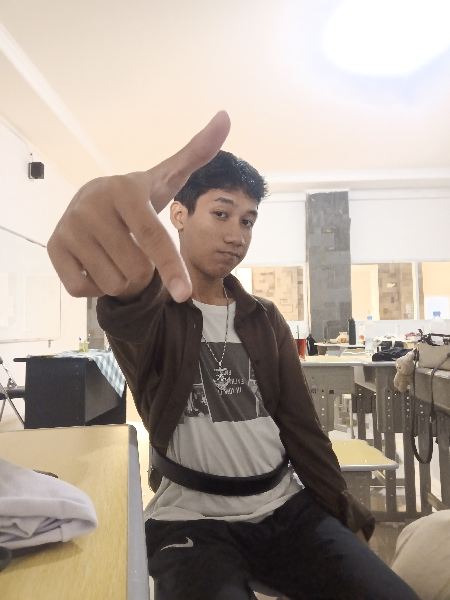

Pelajar | Calon Web Developer

Halo! Saya Axel Sectio Reginaldi, seorang pelajar yang tertarik dengan dunia web development. Saya sedang belajar HTML dan CSS untuk membangun website yang menarik dan fungsional.
Mata pelajaran yang saya pelajari dan kembangkan selama menempuh pendidikan di SMA.
Mampu memahami konsep biologi, memahami makhluk hidup serta organ tubuh manusia
Contoh penguasaan: 70%
Mampu memahami kosakata, membaca teks, dan melakukan percakapan sederhana.
Contoh penguasaan: 90%
Memahami dasar komputer, algoritma, serta membuat halaman web dengan HTML dan CSS.
Contoh penguasaan: 90%
Berikut beberapa proyek dan karya yang saya kerjakan selama belajar di SMA.
INFORMATIKA
Membuat website yang menampilkan profil, kemampuan akademik, dan karya pribadi menggunakan HTML dan CSS Inline.
Kemampuan: HTML, CSS, desain web.
★ Lihat ProyekSBK
Mengikuti berbagai Kegiatan Seni Budaya seperti pentas seni, berakting, serta menampilkan karya monolog.
Kemampuan: praktek, akting, membuat karya.
★ Lihat KaryaKIMIA
Mencoba berbagai eksperimen menarik untuk membuktikan teori teori yang ada.
Kemampuan: pengamatan, ketelitian, analisis.
★ Lihat ProyekTerima kasih sudah mengunjungi portofolio saya. Mari terhubung dan berbagi ide bersama!
💬 WhatsApp Chat langsung dengan saya 📸 Instagram Lihat aktivitas dan karya saya ✉️ Email Kirim pesan melalui email© 2026 Axel Sectio Reginaldi | Portofolio Pribadi